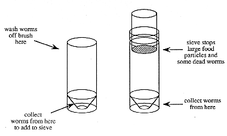

CHAPTER 3 - EMBRYONIC AND LARVAL CULTURE
(Source: B. Trevarrow)
Microworms are a live food that some labs are using instead of brine shrimp. Here is a method for raising microworms adapted from techniques used in fly labs.
You will need:
Clean plastic boxes with snap on lids (Tupperware-like)
Oatmeal (rolled oats or porridge)
A spoon for stirring the oatmeal
Deionized water
10% methyl-p-hydroxybenzoate (also known as Tegosept or Nipagin-M, fungus inhibitor) in 95% EtOH
A productive strain of micro worms (commercially available through hobbyist magazines)
A clean Pasteur pipet
A clean, long handled paint brush with a brush approximately 1 x 2.5 cm
Two 50 ml plastic 'Falcon'-like tubes and a sieve that fits into the top of one of the tubes
Establishing the worm cultures
1. Make up the oatmeal in the approximate proportions of 150 ml of oatmeal to 400 ml of distilled water. The proportions should be adjusted to give a thick but not overly firm consistency.
2. Soak the oatmeal for about 5-10 minutes, then boil in a double boiler for about 5-10 minutes (until the oatmeal is evenly thick from the top to the bottom).
3. Remove the oatmeal from the heat and add 2.8 ml of 10% methyl-p-hydroxybenzoate in 95% EtOH for every 400 ml of oatmeal mixture, to yield a final concentration of 0.07%. Stir and pour into the clean plastic boxes. After the mixture cools, add an aliquot of microworms.
5. Check the new cultures in about a week for worms. They should be climbing out of the culture onto the sides of the container or squirming visibly in the culture medium. Some cultures may take longer to produce a good crop of worms. If they do not produce worms by the second week, rinse and bleach the containers before reusing. Old cultures which no longer produce worms should be discarded and the containers washed and bleached before reuse.
Harvesting worm cultures
1. Select box(es) to be harvested.
2. Fill one of the 50 ml tubes with approximately 20 ml of water.
3. Wet the brush in deionized water and use it to wipe worms off the top of a culture. Swish the brush in the water in the 50 ml tube until the worms fall off.
4. Repeat until enough worms are obtained or until the top is devoid of worms. If more worms are needed, wipe them from the sides of the box or from a new box.
5. Dump the worms that have been collected in the tube onto the sieve on top of the other tube.
Figure 3. Sieve for collecting microworms

6. Add more water to the first tube and wash remaining worms onto the sieve.
7. Fill the second tube with additional water until the level just reaches the bottom of the sieve. Live worms will wiggle through the sieve into the water, dead worms and pieces of food are retained and should be discarded.
8. Let the live worms settle to the bottom (5-15 min).
9. Remove the worms from the bottom of the tube with a Pasteur pipet and transfer to a small tube for distribution to the fish tanks.
10. Live worms can be maintained for extended periods of time in the large or small tubes without any problems.
The Zebrafish Book